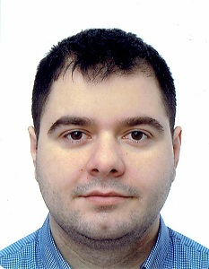

Mgr Piotr Kenis

Zainteresowania naukowe:
- Mineralogia
- Mikroskopia SEM
- Gemmologia
- Badania rud metali kolorowych
- Badania nad występowaniem pierwiastków ziem rzadkich
Wykształcenie:
- 01.10.2006 – 12.09.2012: Uniwersytet Wrocławski, Wydział Nauk o Ziemi i Kształtowania Środowiska, Kierunek - Geologia, Specjalizacja – Petrologia i Mineralogia Stosowana, Tytuł Pracy Magisterskiej: „Charakterystyka gemmologiczna opali z serpentynitów Bloku Przedsudeckiego”
Dydaktyka:
- Hydrologia
Działalność organizacyjna
- 19.05.2014 – 14.07.2015: Szkoła Wyższa Rzemiosł Artystycznych i Zarządzania – Prowadzenie zajęć dydaktycznych z przedmiotu szlifowanie kamieni szlachetnych i ozdobnych oraz nadzór nad przestrzeganiem przepisów BHP
- Członek Polskiego Towarzystwa Przyjaciół Nauk o Ziemi – oddział dolnośląski
Udział w projektach badawczych:
- High Copper - „Opracowanie wysokoefektywnej technologii wzbogacania Polskich rud miedzi”. Projekt finansowany przez Narodowe Centrum Badań i Rozwoju oraz KGHM w ramach Przedsięwzięcia „CuBR”. Projekt realizowany w PORT sp. z o.o.
- REEcoup - „Odpady z kruszyw Dolnego Śląska jako źródło pierwiastków ziem rzadkich”. Projekt realizowany w PORT sp. z o.o.